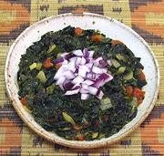

|
Sukuma Wiki, GreensAfrica, Tanzania / Kenya / Uganda - Sukuma Wiki | ||||
| Serves: Effort: Sched: DoAhead: |
5 side ** 1-1/4 hrs Yes |
This dish goes by the name of the greens it's made from, Sukuma Wiki, Swahili for "Push the Week". The name comes from stretching the weekly food budget. | |||
| Sukuma Wiki is extremely popular in Kenya, Tanzania and Uganda, and is one of the most pleasing Kale recipes you'll likely find. See also Comments and Variations. | |||||
|
1 8 8 1-1/2 1/2 1 1 1-1/2 |
# oz oz T T c t T |
Kale (1) Tomatoes Onion Olive Oil Curry Powder (2) Water Salt Lemon Juice |
Prep - (40 min)
|